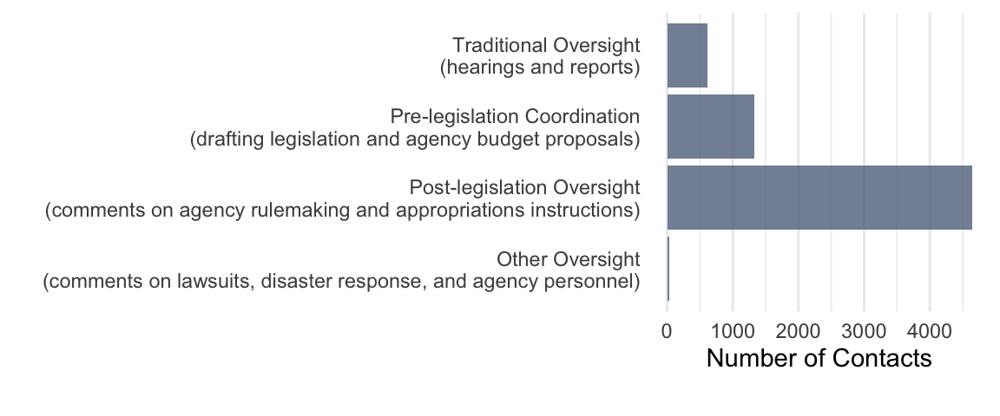
8 General Policy Work
ABSTRACT: Stark differences in the amount of policy work legislators do are driven by the capacity gained through institutional positions. Like with constituency service, experience matters, independent of institutional positions of power, but institutional power drives differences in policy work to a degree much greater than any kind of constituency service. Unsurprisingly, being a committee chair, ranking member, or oversight committee member is an especially strong predictor of contacting an agency about policy. Like with constituency service, legislators are more likely to work with agencies on policy when they are ideologically aligned, reflecting how policy work is not just traditional “oversight” investigations into wrongdoing, but also includes proactive information seeking during the drafting of legislation and, most commonly, follow-up to make sure legislative directions result in agency rules as envisioned by the legislators. Unlike constituency service, where legislators are more likely to contact co-partisan presidents, the partisanship of the president has a less significant effect on policy work.
Like other forms of interbranch representation, policy work is highly unequal.


8.1 Genres of policy work
We can group policy work into three subtypes: (1) pre-legislation coordination, (2) traditional oversight (e.g., requests related to hearings, investigations, and reports, and (3) post-legislation agency policymaking (e.g., rulemaking comments and requests about how agencies distribute appropriations. Sometimes policy work is clearly driven by legislators’ policy interests. Other times it clearly stems directly from experience with constituent casework or constituent pressures (e.g., letter-writing campaigns). We address policy work on behalf of business interests in the following chapter.
Within the subset of legislator requests that focus on policy rather than constituency service, most are comments on proposed agency rules implementing statutory authority (Figure 8.2). The next most frequent type of request is for assistance in drafting legislation. As it occurs before legislation, this is clearly not oversight. The third most common type of request relates to more traditional oversight actions like hearings and reports. Another, much smaller category of requests emerges of oversight that, unlike hearings and rulemaking comments, is largely unrelated to legislative tasks. For example, member of Congress frequently contact agencies about personnel decisions, upcoming lawsuits, and their response to disasters. When the nature of the congressional request relates to agency leadership, personnel policy (rather than a particular federal worker), how the agency should settle or make policy changes in response to a lawsuit, or how it should distribute disaster aid (in general, not to a particular group of constituents), we consider such requests to involve agency policy.
The nature of interbranch representation varies by agency. This is true within subtypes of policy work as well. While congressional attention focuses on rulemaking overall, contacts with Homeland Security focus on traditional oversight, and contacts with USDA are mostly about Farm Bills and related legislation (Figure 8.3).
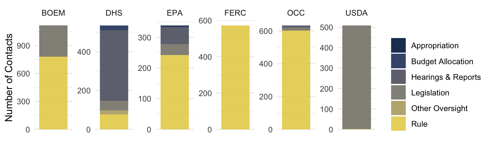
Interbranch representation informs legislating
Discussions of congressional oversight usually focus on hearings and investigations, both of companies and government agencies. Through hearings like those that Senator Levin conducted on U.S. Vulnerabilities to Money Laundering, Drugs, and Terrorist Financing, legislators shine a spotlight on problems that demand action from government, often federal agencies.
Legislators also request information from federal agencies, both in ways that may inform their legislative activities and in ways that contribute to oversight. For example, Rep. John Dingell (D-MI) and other high-ranking members of the House Committee on Energy and Commerce wrote to the FDA to request information on levels of lead in children’s lunchboxes. Rep. Tom Reed (R-NY) wrote to the Centers for Medicare and Medicaid Services (CMS) to ask how the competitive bidding process would affect Medicare beneficiaries’ access to insulin pumps and supplies. Legislators clearly see federal agencies as resources from which they can procure information related to policy, including information that helps them oversee its implementation.
Oversight investigations inform agency policy
Figure 8.4 shows a letter from Senator Levin in support of a proposed rule from the Treasury Financial Crimes Enforcement Network, citing investigations and hearings.
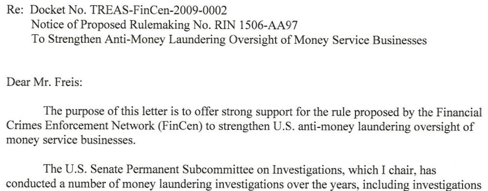
This was not the only agency policy informed by Levin’s oversight investigations. Figure 8.5 shows a letter that Senator Levin wrote supporting an IRS rule, with a 1000-page hearing transcript entered into the record.
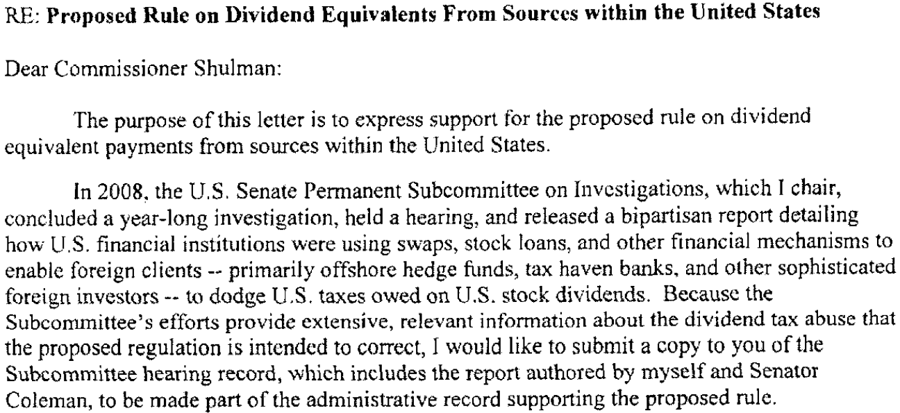
Congressional attention is not all positive. In 2013, Senator Levin wrote, chastising five agencies for being too slow to finalize the Volcker Rule limiting high-risk trading (Figure 8.6).
Legislators writing agencies about how they are implementing policy is much more common than questioning agencies about what they are doing in a hearing.
Interbranch representation informs statutory interpretation and executive-branch policymaking
Most legislator contacts address what scholars often call “implementation” of laws passed by Congress, mostly by commenting on draft agency rules. Sometimes this involves legislators following up on rulemaking required to give most pieces of legislation effect (laws passed by Congress, like executive branch executing, are mostly authorizations and requirements for bureaucrats to make rules. Very little legislation is self-executing.) ?fig-levin-statutory shows Senator Levin taking issue with the Statutory interpretation that the Small Business Administration used in making policy. Agencies take this kind of intervention seriously. In response to Levin’s letter, the Administrator of the Small Business Administration, Maria Contreras-Sweet, replied that they were taking the senator’s perspective as they crafted the rules implementing the Dodd-Frank Act.
Interbranch representation goes beyond technical and legal opinions. Policy fights do not end when Congress passes a law; they merely shift to the executive branch, and members of Congress are actively engaged in this arena. For example, in 2007, a group of 13 Republican legislators, including Mike Pence, wrote to Ben Bernanke and the Federal Reserve governors to “applaud [them] for not exempting any payment system from the regulations” and to oppose pressure from industry to delay rules implementing the 2006 Unlawful Internet Gambling Enforcement Act of 2006.
Appropriations
In addition to attempting to shape how the executive branch makes policy through rulemaking, members of Congress are active in attempting to shape the distribution of appropriated funds. This happens both for specific grant applications as discussed in Chapter 7 and in a more general sense.
Constituencies and partisanship
Partisan tensions between the policy agendas of members of Congress and the President drive a great deal of policy-related interbranch representation. An opposition party can only hold hearings when they are in the majority, but individual members can always contact an agency any time. For example, Democratic legislators wrote thousands of letters opposing Trump-era policy, such as those that allow certain nonprofits not to disclose their donor contributions, environmental deregulation, and The Consumer Financial Protection Bureau’s 2019 rule that made it easier for debt collectors to harass consumers. 77 Democratic members of the House and 23 Senators wrote to oppose a 2019 proposed rule by the Department of Labor’s Wage and Hour Division that permitted employers to pay fewer employees overtime.
Democrat Tom Malinowski and other democrats who oppose the Trump-era CFPB rule that would deregulate payday lenders.
“The precipitous decline in the volume of enforcement actions during your tenure leads me to question whether the CFPB is indeed following through on its objective to protect consumers and aggressively enforce the law.”
Members of Congress were more often than not supportive of industry when writing to the Department of the Interior’s Bureau of Safety and Environmental Enforcement (as discussed in the next chapter). However, there is also a great deal of advocacy on behalf of broader interests. For example, many members of Congress from coastal states wrote to oppose the Trump administration’s removal of safety rules on offshore oil drilling. Florida Republican Vern Buchanan went so far as to support the environmentalist group Center for Biological Diversity.
Procedural politicking
As documented by Lowande and Potter (2019) and Potter (2019), one form of proxy fight over policy is the timing of rules. Agencies may speed up or slow down rulemaking processes, for example by extending the comment periods or refusing to do so. Thus, legislators, like others, are often attempting to intervene procedurally, especially by attempting to extend study periods or comment periods. For example, on the same Federal Reserve rule that Mike Pence and other Republican Senators pushed back on substantive grounds, a different group of legislators made a procedural argument. The gambling industry groups were requesting state-by-state surveys of gambling laws. Legislators from the Subcommittee on Administrative Law called out this ploy for regulatory delay.
From the other side of the aisle, Democratic members of Congress attempted to slow environmental deregulation under the Trump Administration was to ask that the Counsel On Environmental Quality and other agencies extend comment periods on their proposed rules.
“That’s why I am particularly disappointed that CEQ denied my—and more than 160 Members of the House and Senate—request for an extension of the comment period. Further, CEQ simply chose not to respond to our request for additional public hearings. CEQ has proposed a massive overhaul to a set of keystone environmental regulations that have stood in place — largely unchanged for almost half a century. By providing a mere 60-day comment period, and only two public hearings (in Colorado and Washington, DC), CEQ appears uninterested in obtaining broad-scale public input.” - Oregon Representative Peter DeFazio, Chairman of the Committee on Transportation and Infrastructure.
Legislator attention is often shaped by constituents & interest groups
Interbranch representation does not occur in a political vacuum. All of the examples above are parts of broader policy fights that include interest groups. In 2019, the Sierra Club advertised that “Last fall, 105 Members of Congress and 34 U.S. Senators sent letters to Trump’s Department of the Interior to protest the harmful rollbacks” (Sierra Club 2019). In his classic book Bureaucracy, Wilson (1989) describes the role of constituents and interest groups in activating interbranch representation when the Federal Trade Commission (FTC) began making rules about antitrust and fraud in the 1970s. The FTC proposed a Funeral Industry Practice rule requiring disclosure of the prices of components of funeral expenses and a Used Car Rule that required dealers to inspect each car offered for sale and post the results on the car’s window.
“Undertakers and used-car dealers were outraged by these proposed rules. Very quickly, members of Congress discovered just how many undertakers and car dealers they had in their districts and how well-connected they were. The FTC suddenly had activated large, hostile interests who were successful in getting Congress to force the agency to back down” (Wilson 1989, 83).
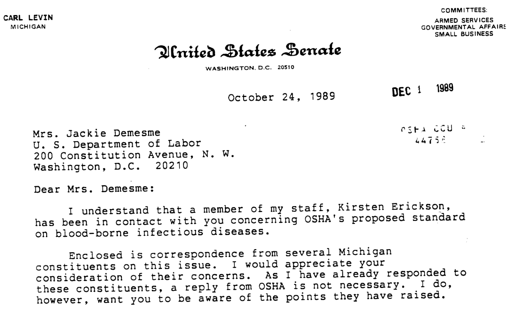
8.2 What it looks like
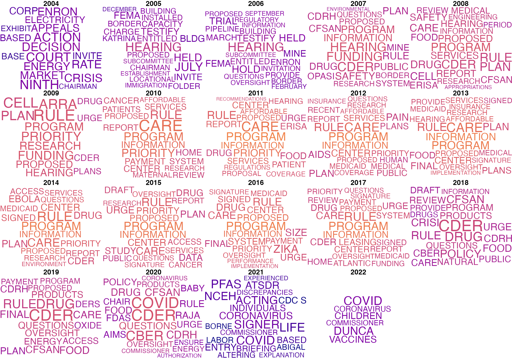
As shown in the word cloud of frequently used words in Figure 9.1, members of Congress communicate with federal agencies about general policy work involving a variety of matters related to policy, including hearings, rules, and programs that are part of policy implementation, as well as requests for information about specific policy issues. Many of the specific policy issues seem to follow the “events of the day”: “Katrina” appears in 2005; “ARRA” (the American Recovery and Reinvestment Act, or stimulus bill) appears in 2009; and “Ebola” appears in 2014, along with “Zika” in 2016 and “COVID” in 2020. The Affordable Care Act also had a major presence in congressional correspondence between 2010 and 2012.
Legislators’ communications with federal agencies for the purpose of general policy work speak to Congress’s role in conducting oversight of the bureaucracy. Senator Chuck Grassley (R-IA), the most prolific author of policy-related correspondence, sent a number of letters to the Centers for Medicare and Medicaid Services (CMS) within the Department of Health and Human Services that were tagged by the agency as “oversight.” These letters covered topics such as budget sequestration, the implementation of the Sunshine Act, and various rules, including the Inpatient Prospective Payment System (IPPS) rule, the Medicare Hospital Value-Based Purchasing rule, and CMS’s delay in drafting other regulations required by the Affordable Care Act. Grassley also co-authored a letter with two other unidentified legislators to request information about the Patient Safety and Medical Liability Reform Demonstration and Planning grants that CMS was funding. All of the examples discussed here occurred during the Obama administration. Overall, many of Grassley’s communications with CMS seem to be focused on conducting oversight of an agency with which he was not ideologically aligned–a departure from the findings in our analysis, as we discuss in greater detail below.
The most frequent words used in congressional contacts with the Mine Health and Safety Administration illustrate two important points: (1) policy work often means involvement in executive-branch policymaking, and (2) policy work is often closely related to constituent service. In addition to topics of policy contacts (words like mine, safety, explosion, coal, dust, exposure, irreparable, silica, fibrosis, and disability), words like hearing, report, inspections indicate traditional oversight activities.
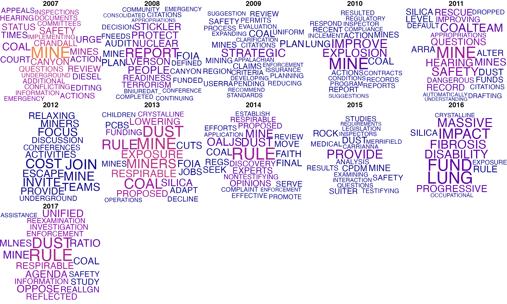
While related to and informed by traditional oversight, many more of these requests are about agency rulemaking and other executive-branch policymaking. Often the oversight work leads to neither legislation nor hearings, but more often changes in agency rules, guidance, or enforcement practices. While scholars often talk of oversight as fitful bursts of attention in response to five-alarm fire of bureaucratic failure, legislator offices are in constant communication with many agencies, voice opinions, and raise problems they hear from their constituents as agencies develop policy. Given the meager capacity of legislator offices, attention is certainly limited across issues, leading some agencies to receive much more attention than others, but these data show that congressional interventions in agency practices are much less discrete and punctuated than assumed by conventional models of interbranch relations.
8.3 Explaining Differences in Policy Work
Variation in policy work is mainly driven by capacity, especially experience and institutional positions. Supporting theories that view interbranch relations as coalitional networks rather than principals and agents focusing on control and oversight, policy work tends to be with agencies that are perceived as ideologically aligned. Doing more with aligned agencies is the only strategic choice that matters.
| (1) | (2) | (3) | (4) | (5) | (6) | |
|---|---|---|---|---|---|---|
| † p < 0.1, * p < 0.05, ** p < 0.01 | ||||||
| Robust standard errors in parentheses, clustered by legislator. | ||||||
| This table shows estimates of the effect of constituent demand (population, employment, education, public assistance), legislator capacity (chamber, reporting committee, committee chair, subcommittee chair, and ranking member positions and years in office) and institutional positions that may affect strategic behavior (reporting committee membership, perceived ideological distance from teh agency, co-partisan president) on levels of interbranch representation. | ||||||
| Dependent variable | Count | Count | Count | Count | Count | Count |
| Constituent Demand | Constituent Demand | Constituent Demand | Constituent Demand | Constituent Demand | Constituent Demand | Constituent Demand |
| Population (Millions) | 0.016** | 0.040† | 0.144 | 0.016** | 0.080 | |
| (0.006) | (0.024) | (0.342) | (0.004) | (0.122) | ||
| % Government Sector | 0.297 | -0.162 | 0.577 | -0.247 | -0.303 | -10.831 |
| (0.534) | (1.152) | (0.556) | (1.192) | (1.536) | (15.093) | |
| % College Grad | 0.950** | 0.361 | 0.812** | 0.149 | 2.154** | 6.413 |
| (0.245) | (0.383) | (0.266) | (0.396) | (0.829) | (6.750) | |
| % Public Assistance | 0.047 | 5.685* | -0.748 | 4.471 | 6.647* | 14.574 |
| (1.426) | (2.581) | (1.543) | (2.778) | (3.370) | (9.345) | |
| Strategic Choices Shaped by Political Environment | Strategic Choices Shaped by Political Environment | Strategic Choices Shaped by Political Environment | Strategic Choices Shaped by Political Environment | Strategic Choices Shaped by Political Environment | Strategic Choices Shaped by Political Environment | Strategic Choices Shaped by Political Environment |
| Competitive General | 0.029 | 0.016 | 0.021 | -0.001 | -0.042 | 0.033 |
| (0.050) | (0.041) | (0.061) | (0.050) | (0.075) | (0.089) | |
| Competitive Primary | -0.030 | -0.002 | ||||
| (0.059) | (0.061) | |||||
| President's Party | -0.079† | -0.012 | -0.061 | 0.003 | -0.019 | -0.011 |
| (0.042) | (0.024) | (0.050) | (0.032) | (0.085) | (0.034) | |
| Republican | -0.208** | -0.199** | -0.292* | |||
| (0.051) | (0.050) | (0.113) | ||||
| Independent | -0.078 | -0.264* | ||||
| (0.088) | (0.109) | |||||
| Ideological Distance | -0.334** | -0.340** | -0.296** | |||
| (0.048) | (0.057) | (0.074) | ||||
| Distance x President's Party | 0.047 | 0.060 | 0.017 | |||
| (0.046) | (0.054) | (0.082) | ||||
| | 1st Dim. DW-NOMINATE | | 0.098 | 0.167 | -0.047 | |||
| (0.174) | (0.191) | (0.366) | ||||
| Capacity | Capacity | Capacity | Capacity | Capacity | Capacity | Capacity |
| Reporting Committee | 0.666** | 0.340** | 0.749** | 0.326** | 0.457** | 0.216† |
| (0.044) | (0.068) | (0.049) | (0.084) | (0.079) | (0.122) | |
| Three+ Years in Office | 0.406** | 0.294** | 0.348** | 0.279** | 0.612** | 0.424** |
| (0.036) | (0.042) | (0.044) | (0.053) | (0.088) | (0.104) | |
| Committee Chair | 0.784** | 0.549** | 1.023** | 0.870** | 0.496** | 0.256** |
| (0.083) | (0.084) | (0.115) | (0.117) | (0.087) | (0.084) | |
| Ranking Member | 0.492** | 0.369** | 0.442** | 0.451** | 0.414** | 0.249** |
| (0.070) | (0.068) | (0.101) | (0.118) | (0.076) | (0.081) | |
| Subcommittee Chair | 0.033 | 0.057 | 0.114* | 0.082† | -0.065 | 0.139* |
| (0.043) | (0.039) | (0.048) | (0.046) | (0.080) | (0.066) | |
| Served in State Leg. | -0.037 | -0.064 | 0.041 | |||
| (0.044) | (0.046) | (0.107) | ||||
| Senate | 0.735** | 0.472** | ||||
| (0.078) | (0.168) | |||||
| Observations | 301,794 | 106,209 | 215,642 | 71,949 | 51,318 | 26,949 |
| Year x agency fixed effects | X | X | X | X | X | X |
| Legislator x agency fixed effects | X | X | X | |||
| All legislators | X | X | ||||
| Only House | X | X | ||||
| Only Senate | X | X | ||||
Demand
Unsurprisingly, the number of constituents in a district has a much weaker relationship with policy work compared to the various forms of constituency service discussed in the prior three chapters. For members of the House, there is no relationship between population and policy work. Senators from larger states do more interbranch representation, likely due to the larger staff budgets of Senators from larger states. It is also possible that more constituents means a larger portfolio of policy needs. Figure 8.13 shows that differences in state population drive differences in both the volume and inequality of interbranch representation.
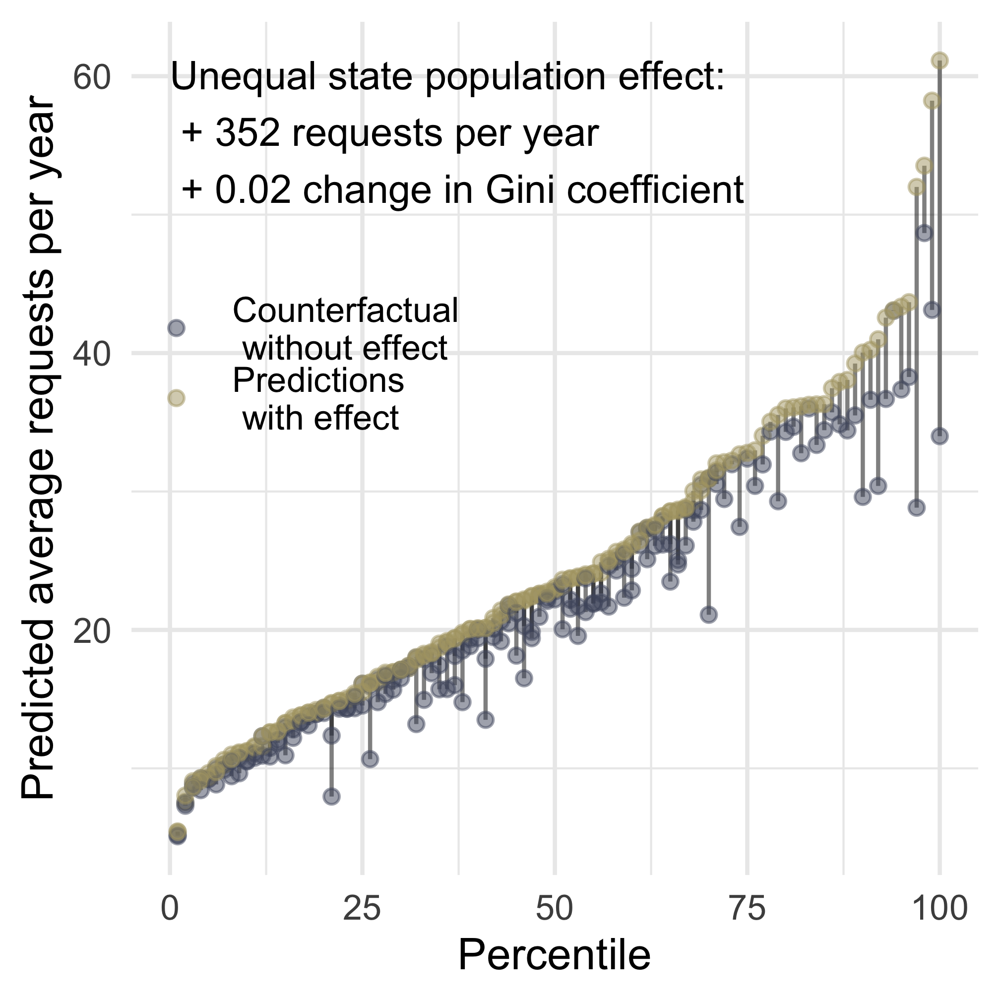
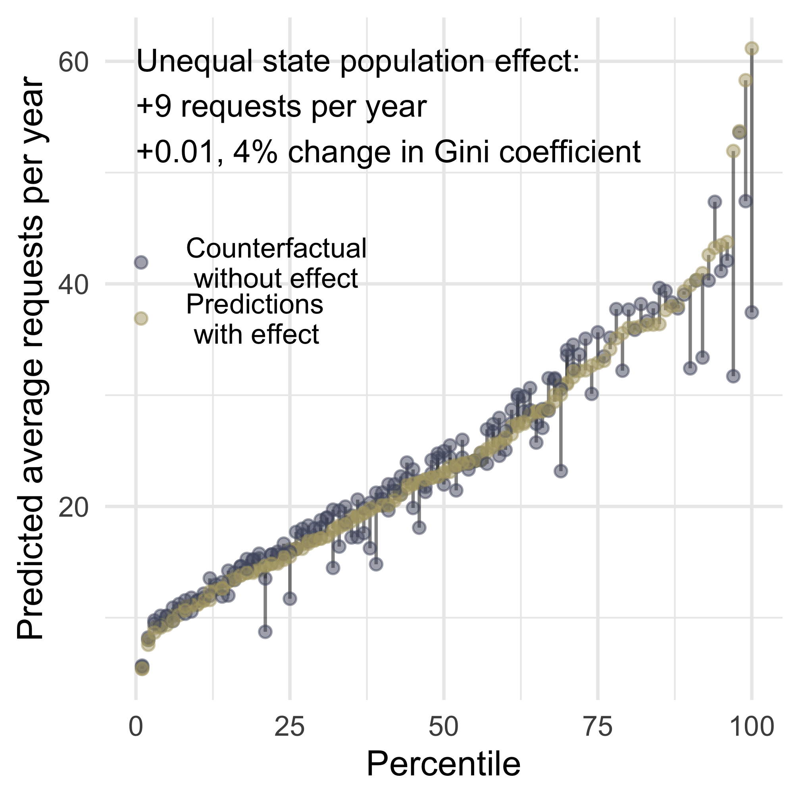
As expected, policy work is less associated with the number of constituents and more associated with the level of education in a district. Here the intense demanders are intense policy demanders, and variation in interbranch representation follows well-know patterns in the kinds of constituencies who contact their member of Congress about policy.
Capacity
Columns 1, 3, and 5 of Table 9.1 show differences across legislators with different capacity advantages. Most forms of capacity matter with large effects explaining a large share of overall inequality.
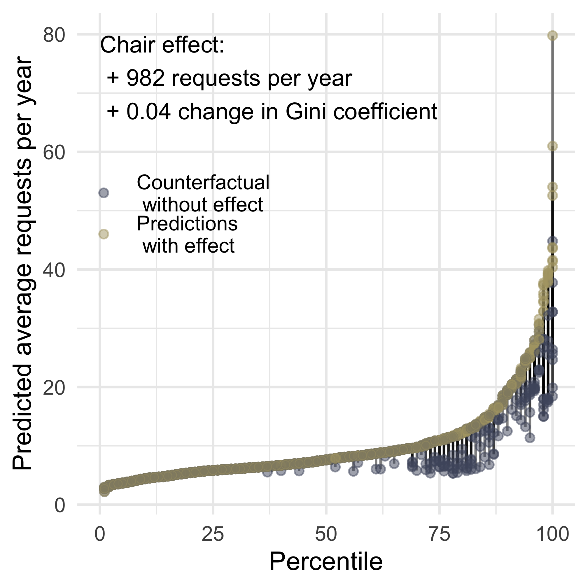
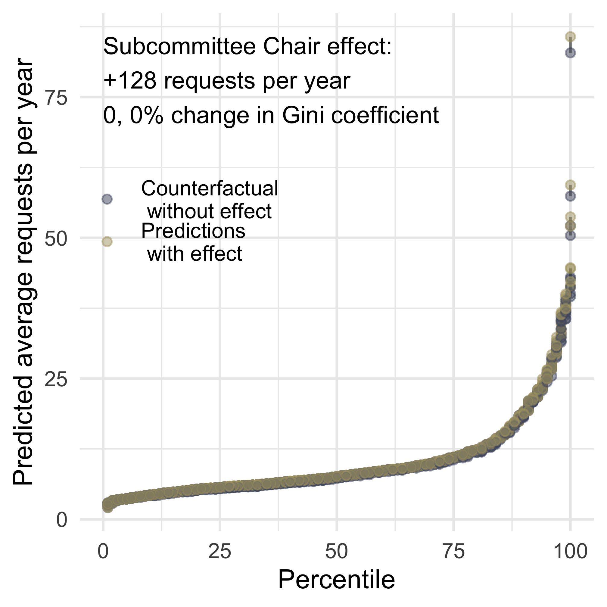
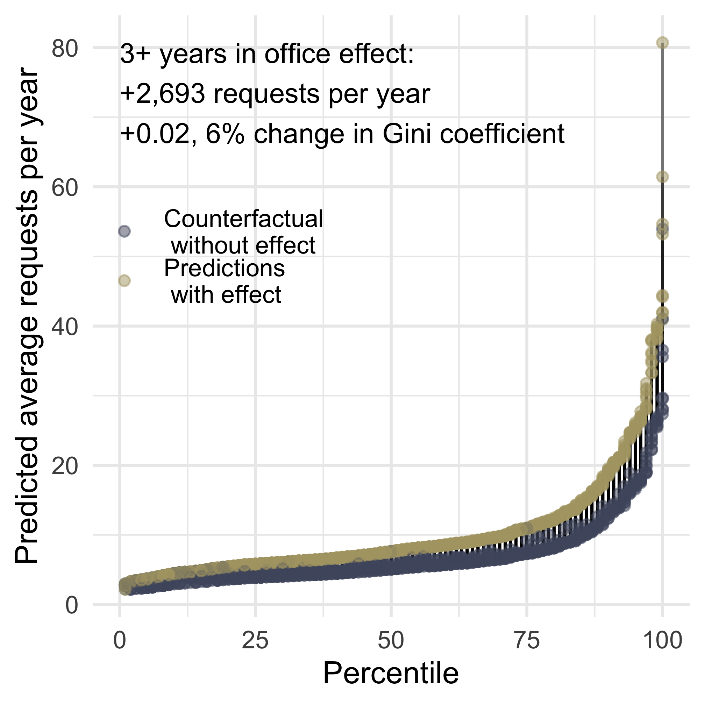
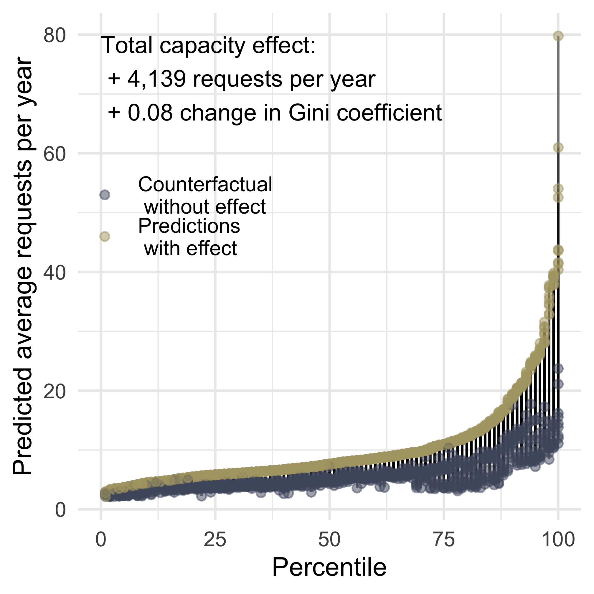
Staff prior experience
Even more strongly than other forms of interbranch representation, electing a new member of Congress decreases policy work done on behalf of a district, and retaining staff does not appear to mitigate this.
| (1) | (2) | (3) | (4) | (5) | (6) | |
|---|---|---|---|---|---|---|
| † p < 0.1, * p < 0.05, ** p < 0.01 | ||||||
| Robust standard errors in parentheses, clustered by district | ||||||
| This table shows estimates of the effect of electing a new member of the same or different party on levels of interbranch representation. | ||||||
| Dependent variable | Count | Count | Count | Count | Count | Count |
| New Member | -0.395** | -0.268** | -0.299** | -0.256** | -0.658** | -0.234** |
| (0.034) | (0.031) | (0.056) | (0.059) | (0.088) | (0.055) | |
| New Member x Same Party | 0.094 | 0.043 | -0.041 | -0.035 | ||
| (0.082) | (0.091) | (0.135) | (0.078) | |||
| Same Party | -0.119* | 0.066 | -0.216† | 0.117 | ||
| (0.060) | (0.084) | (0.115) | (0.088) | |||
| Competitive General | 0.422** | -0.062 | ||||
| (0.106) | (0.050) | |||||
| President's Party | -0.030 | -0.097† | ||||
| (0.067) | (0.057) | |||||
| Republican | -0.175 | -0.130† | ||||
| (0.119) | (0.070) | |||||
| Independent | 0.126 | -0.157 | ||||
| (0.139) | (0.112) | |||||
| Ideological Distance | -0.193* | -0.272** | ||||
| (0.083) | (0.062) | |||||
| Distance x President's Party | -0.031 | 0.052 | ||||
| (0.055) | (0.050) | |||||
| | 1st Dim. DW-NOMINATE | | -0.127 | -0.055 | ||||
| (0.414) | (0.197) | |||||
| Senate | 1.778** | 1.894** | ||||
| (0.069) | (0.063) | |||||
| Observations | 309,030 | 309,003 | 111,124 | 110,639 | 108,952 | 108,463 |
| Year x agency fixed effects | X | X | X | X | X | X |
| District fixed effects | X | X | X | |||
Strategic Responses to the Political Environment
Policy work as electoral strategy
The theory motivating Hypothesis 2.9 — that elections motivate interbranch representation — applies much less strongly to policy work than constituency service, especially because the kind of policy work we are studying here is mostly invisible to constituents (much more so than legislative work, which, itself, constituents rarely comprehend).
We find no evidence that electoral competitiveness, majority status, or the party of the president affect policy work.
Strategic responses to partisan institutions
Legislators are no more or less likely to engage in policy work with agencies under a co-partisan president. We thus have no evidence for Hypothesis 2.11 or Hypothesis 2.11 when it comes to policy work. Given the strong effect of ideological alignment, legislators may shift the type of policy work they do such that increased oversight under presidents of the other party cancels out the effect of decreased collaborative work.
Table C.20 (all of the variables in Table 9.1 except committee leadership positions) shows a strong positive effect of majority status for this kind of policy work. However, ?tbl-models-elect_pol shows the opposite. In general, we find that the correlation between majority status and policy varies widely by model specification. We thus hesitate to make strong conclusions.


Staff allocation
Interestingly, both legislative and constituency service spending increase policy work, suggesting a relationship between constituency service and policy work that is often discussed in practitioner spaces but rarely in scholarship. As with other types of interbranch representation, offices that spend more on communications do less policy work, supporting @.
| (1) | (2) | (3) | (4) | |
|---|---|---|---|---|
| † p < 0.1, * p < 0.05, ** p < 0.01 | ||||
| Robust standard errors in parentheses, clustered by legislator. | ||||
| This table shows estimates of the effect of legislator staff spending. | ||||
| Dependent variable | Count | Count | Count | Count |
| Legislative Spending | 0.738** | 0.314 | 0.467* | 0.265 |
| (0.270) | (0.215) | (0.238) | (0.201) | |
| Comms. Spending | -1.871* | -0.340 | -1.374* | -0.087 |
| (0.883) | (0.638) | (0.686) | (0.579) | |
| Const. Spending | 1.158** | 0.886** | 0.538* | 0.318 |
| (0.230) | (0.217) | (0.216) | (0.227) | |
| Majority | -0.026 | -0.048 | ||
| (0.047) | (0.052) | |||
| President's Party | 0.078† | -0.119* | ||
| (0.047) | (0.046) | |||
| Reporting Committee | 0.776** | 0.374** | ||
| (0.056) | (0.108) | |||
| Three+ Years in Office | 0.307** | 0.275** | ||
| (0.053) | (0.064) | |||
| Committee Chair | 1.021** | 0.828** | ||
| (0.144) | (0.146) | |||
| Ranking Member | 0.435** | 0.414** | ||
| (0.107) | (0.129) | |||
| Prestige Committee | 0.078 | 0.131† | ||
| (0.059) | (0.076) | |||
| Subcommittee Chair | 0.153* | 0.154* | ||
| (0.065) | (0.062) | |||
| Served in State Leg. | -0.106† | -2.857 | ||
| (0.055) | (934225.766) | |||
| Observations | 143,602 | 40,663 | 143,110 | 40,531 |
| Year x agency fixed effects | X | X | X | X |
| Legislator x agency fixed effects | X | X | ||
| House Only | X | X | X | X |
Figure 9.6 shows that staff allocation has a substantively large relationship with the volume of policy work but does not explain a large share of the inequality.


Strategic: Fundraising and Policy Work
Likewise, legislators that raise a lot of money do more (contradicting Hypothesis 2.16 in the same way we saw in Chapter 5 and Chapter 7). We expected legislators who engage in more corporate fundraising would be associated with lower levels of policy work. Table 9.4 shows the opposite; the offices of legislators who receive corporate PAC contributions also do more policy work on average. We do not have a causal theory to explain this relationship, but combined with the results from Chapter 5 and Chapter 7, this pattern suggests that PAC contributions may be reflecting an unmeasured latent dimension of legislator power or capacity that empowers legislative offices to do more interbranch representation. Beyond creating an incentive to advocate for businesses to the federal government as predicted in #thm-strategic-corporate, it seems that PAC contributions reflect something more that is correlated with all types of interbranch representation.
| (1) | (2) | (3) | (4) | |
|---|---|---|---|---|
| † p < 0.1, * p < 0.05, ** p < 0.01 | ||||
| Robust standard errors in parentheses, clustered by district | ||||
| This table shows estimates of the relationship between corporate Political Action Committee donations and levels of interbranch representation. | ||||
| Dependent variable | Count | Count | Count | Count |
| Corporate Campaign $ (Millions) | 0.022** | -0.001 | 0.015** | -0.004 |
| (0.008) | (0.004) | (0.005) | (0.004) | |
| Majority | 0.090* | 0.081** | 0.046 | 0.041 |
| (0.036) | (0.031) | (0.032) | (0.030) | |
| President's Party | -0.076† | 0.004 | -0.080† | -0.007 |
| (0.044) | (0.025) | (0.042) | (0.024) | |
| Republican | -0.228** | -0.264** | ||
| (0.059) | (0.050) | |||
| Independent | -0.271* | -0.121† | ||
| (0.107) | (0.072) | |||
| Ideological Distance | -0.373** | -0.341** | ||
| (0.055) | (0.048) | |||
| Distance x President's Party | 0.041 | 0.045 | ||
| (0.049) | (0.046) | |||
| | 1st Dim. DW-NOMINATE | | 0.090 | 0.143 | ||
| (0.183) | (0.160) | |||
| Reporting Committee | 0.666** | 0.345** | ||
| (0.045) | (0.068) | |||
| Three+ Years in Office | 0.414** | 0.297** | ||
| (0.038) | (0.040) | |||
| Committee Chair | 0.771** | 0.537** | ||
| (0.087) | (0.086) | |||
| Ranking Member | 0.512** | 0.376** | ||
| (0.074) | (0.071) | |||
| Prestige Committee | 0.036 | 0.034 | ||
| (0.045) | (0.047) | |||
| Senate | 1.089** | 0.630** | 0.816** | 0.691** |
| (0.064) | (0.103) | (0.058) | (0.104) | |
| Observations | 306,932 | 107,188 | 303,489 | 106,350 |
| Year x agency fixed effects | X | X | X | X |
| Legislator x agency fixed effects | X | X | ||
8.4 Conclusion: Legislators’ General Interbranch Policy Work
Differences in the amount of policy work legislators do are driven by the capacity gained through institutional positions. Like with all forms of constituency service, experience matters, independent of institutional positions of power, but institutional power drives differences in policy work to a degree much greater than any kind of constituency service. Unsurprisingly, being a committee chair, ranking member, or oversight committee member is an especially strong predictor of contacting an agency about policy. Legislators are more likely to work with agencies on policy when they are ideologically aligned, reflecting how policy work is not just traditional “oversight” investigations into wrongdoing, but also includes proactive information seeking during the drafting of legislation and follow-up to make sure legislative directions result in agency rules as envisioned by the legislators, and, most commonly, engageing in debates over executive-branch policymaking based on congressional authorizations from decades past.